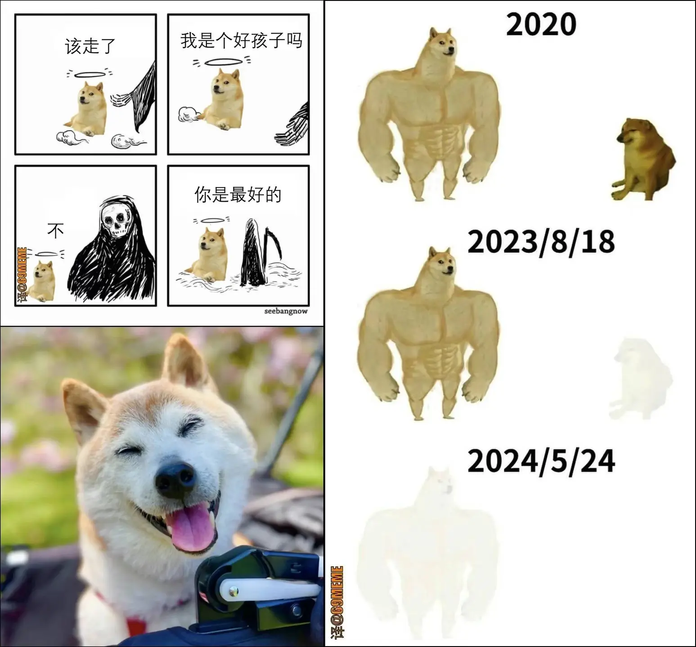

Happy Monday! Thank you very much for supporting the Daily Bulletin. If you want to provide any suggestions, feel free to fill this form. Please note that this is supplementary to The Week Ahead: please still check The Week Ahead for official information. By default, we will deliver a similar email to your inbox every day; if you no longer wish to receive this email anymore, please unsubscribe. Thank you!
周一快乐！感谢您支持每日公告。如果您想提出建议，请填写这个问卷。请注意，每日公告只是每周展望的补充，若想获得官方信息，请继续查阅每周展望。我们每天都会向您的收件箱投递一封类似的邮件；如果您不想继续接收每日公告，请取消订阅。谢谢！
Important Events 重要事件
| Day | Events |
|---|---|
| Mon | Y9 & Y11 Internal Exams |
| Varsity Boys Volleyball vs Wellington @ Wellington | |
| Varsity Girls Volleyball vs SHSID | |
| Beijing Community International School Visit | |
| + |
Delicious Dinings 今日佳肴
| Day | Taste of Asia | Eat Global | Revolution | Morning Snack | ||||
|---|---|---|---|---|---|---|---|---|
| Mon | Pork Bun 猪肉包 |
Minced Pancake 酱香饼 |
Steamed Egg 蒸鸡蛋 |
Ham & Cheese with Egg Crêpe 火腿芝士鸡蛋可丽饼 |
Raisin Bread Ball 葡萄干面包小球 |
Pumpkin 南瓜 |
Chocolate Danish 巧克力丹麦酥 |
|
| Tue | Leek and Egg with Ham Pancake 手工香葱火腿鸡蛋煎饼 |
Green Vegetable Mushroom Bun 香菇青菜包 |
Tea Egg 茶叶蛋 |
Fried Egg 煎荷包蛋 |
Hash Brown 薯饼 |
Pork Sausage 煎猪肉肠 |
Japanese Fried Udon Noodles 日式炒乌冬面 |
Donut 甜甜圈 |
| Wed | Shaomai 烧麦 |
Shandong Pancake 山东煎饼 |
Marinated Egg 卤水鸡蛋 |
Egg and Chicken & Chesse Burrito 芝士鸡肉早餐卷 |
Oatmeal 麦片粥 |
Corn Tortillas 玉米饼 |
Fried Chicken in Oyster Sauce with Noodles 蚝油鸡片面 |
BBQ Pork Bun 叉烧包 |
| Thu | Marinated Meat in Baked Bun 陕西肉夹馍 |
Steamed Bun 刀切馒头 |
Fried Egg 小葱炒鸡蛋 |
Fried Eggs Over Easy 双面煎嫩蛋 |
Purple Potato 紫薯 |
Spain Sausage 香煎西班牙香肠 |
Fried Rice with Shanghai Style 上海酱油蛋炒饭 |
Pork Floss Dim Sum 肉松小贝 |
| Fri | Steamed Dumplings 蒸饺 |
Smashed Bean Bun / Rice Roll 豆沙包 / 上海粢饭团 |
Boiled Egg 白煮蛋 |
Roasted Tomatos 烤番茄 |
Italian Bacon Frittata 意式培根烘蛋 |
Potatoes 土豆 |
Dumplings 鸡汤小馄饨 |
Bean Paste Bun 豆沙包 |
| + | ||||||||
| Day | Taste of Asia | Eat Global | Revolution | Piccola Italia | Vegetarian | Afternoon Snack | ||
|---|---|---|---|---|---|---|---|---|
| Mon | Braised Pork with Quail Egg 鹌鹑蛋红烧肉 |
Stir-fried Chicken with Shredded Potatoes and Green Pepper 青椒土豆丝炒鸡丝 |
Butter Chicken 黄油鸡 |
Cabbage 大白菜 |
Fish Noodles with Pickled Vegetables 酸菜金汤鱼面 / 卤蛋 |
Fusilli with Chicken Fillet with Black pepper 黑椒鸡柳炒意大利螺旋面 |
Cheese Quesadilla with Baked Beans 芝士墨西哥饼 |
Steamed Pork Bun 小肉包 |
| Tue | Sichuan Spicy Fish 川湘豆花鱼 |
Shredded Pork with Cabbage and Edamame Bean 雪菜毛豆肉丝 |
Duck Confit 法式油封鸭腿 |
Grilled Cowpea 扒豇豆 |
Noodles with Braised Pork Chop 红烧大排面 / 兰花豆腐干 |
Italy Creamy Bacon and Mushroom Pasta 焗意大利奶油培根蘑菇面 |
Pan-fried Shredded Potato Cake 土豆丝饼 |
Samosa 咖喱角 |
| Wed | Teriyaki Shrimp with Scallion 照烧香葱虾 |
Fried Chicken Slices with Tomato and Celery 番茄西芹炒鸡片 |
Thai Pork with Coconut 泰式椰香猪肉 |
Kimchi 韩国泡菜 |
Oden 关东煮 |
Pasta with Pesto Sause & Sausage 香肠罗勒酱意面 |
Z-Rou Meat Balls with Cream Mushroom Stew and Pasta 株肉球烩奶油蘑菇酱配意大利面 |
Waffle 华夫 |
| Thu | Steamed Egg with Minced Pork 肉沫蒸蛋 |
Boiled Baby Cabbage with Ham and Preserved Egg 上汤火腿皮蛋娃娃菜 |
Fried Fish Fillet with Cheese Tar-tar Sauce 芝士煎鱼排配塔塔汁 |
Roasted Tomato and Asparagus 烤番茄芦笋 |
Noodles with Braised Duck 红烧鸭块面 / 白煮鸡蛋 |
Beef Hamburger & Fries 牛肉汉堡配薯条 |
Korean Rice Cake with Vegetables 韩式年糕 |
Mousse Cake 慕斯蛋糕 |
| Fri | Nanjing Salted Duck 南京盐水鸭 |
Pork with Spicy Tofu 麻辣豆腐猪肉 |
Roast Brisket with Black Pepper Sauce 烤牛胸肉配黑胡椒汁 |
Cabbage 杭白菜 |
Noodles with Chicken in Tomato Sauce 茄汁鸡肉面 / 素鸡 |
Paella 西班牙海鲜饭 |
Paprika Braised with Basil Mushrooms 意式甜椒烩配罗勒烤菌菇 |
Ham and Cheese Sandwich 鸡蛋芝士三明治 |
| + | ||||||||
| Day | Taste of Asia | Eat Global | Revolution | Piccola Italia | Vegetarian | Evening Snack | ||
|---|---|---|---|---|---|---|---|---|
| Mon | Sliced Beef with Chili Sauce 水煮牛肉 |
Shredded Pork with Tree Mushroom and Pepper 茶树菇尖椒肉丝 |
Stewed Pork in Samba Sauce with Coconut Biryani 桑巴茄汁烩猪肉配椰香饭 |
Broccoli 西兰花 |
Duck Leg Noodles 酱鸭腿面 / 煎鸡蛋 |
Mexico Pizza 墨西哥薄饼披萨鸡肉 |
Pasta with Caponata 意面配什锦番茄酱 |
Fruit & Fruit Yogurt 水果 & 果味酸奶 |
| Tue | Cantonese Roast Duck 广式烤鸭 |
Bacon and Snow Peas 腊味荷兰豆 |
Stewed Lamb in Red Wine Sauce 炖羊肉 |
Roasted Zucchini 烤西葫芦 |
Oil Gluten Stuffed with Meat and Vermicelli 上海单档（油面筋塞肉） |
Linguine with Garlic Shrimp 蒜香虾仁扁意面 |
Fried Rice Noodles with Bean Sprouts and Egg 豆芽鸡蛋炒河粉 |
Fruit & Yogurt 水果 & 酸奶 |
| Wed | Braised Pork Ball 红烧狮子头 |
Diced Chicken with Bean Curd 鸡丁豆干 |
Pan-seared Fish with Lemon Butter Sauce 法式纸包鱼配柠檬黄油汁 |
Roasted Eggplant 烤茄子 |
Yuxiang Chicken Noodles 鱼香鸡丝面 / 卤豆腐干 |
Jacket Potato with Toppings (Tuna, Bacon, Sour Cream 锡纸烤土豆（金枪鱼 / 培根 / 酸奶油） |
Spanish Mushroom Omelet 西班牙土豆蘑菇鸡蛋饼 |
Fruit & Chocolate Soy Milk 水果 & 巧克力豆奶 |
| Thu | Stewed Fish Fillets with Shepherd's Purse 荠菜烩鱼片 |
Stir-fried Pork Slices with Lettuce 莴笋炒肉片 |
Potato and Sausage Casserole 爱尔兰土豆香肠砂锅 |
Grilled Peppers 煎甜椒 |
Pork Dumplings 抄手 / 煎鸡蛋 |
Baked Pasta with Chicken Sauce 焗意面配鸡肉酱 |
Noodle with Scallion Oil 葱油拌面 |
Fruit & Yogurt 水果 & 酸奶 |
| + | ||||||||
Daily Inspiration 每日灵感
Quote of the Day 每日引言
This is a disaster. Look at the air, listen to the buzzing of the sun, the same as yesterday and the day before. Today is Monday too.
— José Arcadio Buendía
Excerpt from "A Hundred Years of Solitude" by Gabriel García Márquez. Shared by Albert Tan.
选自加西亚 · 马尔克斯《百年孤独》。由 Albert Tan 分享。
Environmental News of the Day 每日环境新闻
Scientists have reported a family of tin-based catalysts that can convert carbon dioxide from industrial emissions into three widely produced chemicals: ethanol, acetic acid, and formic acid.
The catalyst can selectively produce each of these three chemicals with over 90% efficiency by varying the size of the tin particles.
The ultimate goal of this discovery is to integrate these catalysts into a low-temperature electrolyzer, powered by renewable electricity from wind and solar, to produce desired chemicals on-site and reduce CO2 transport and storage costs.
Shared by Bell Lu from Green Origin.
由 Green Origin 社团的陆麒书分享。
Memes of the Day 每日梗图
R.I.P. Doge，你是超棒的狗狗！
Meme 界有你和 Cheems 真的很好。
Shared by Yueyao Li.
由李悦瑶分享。
On This Day 以史为鉴
- 1923 – French drivers André Lagache and René Léonard completed the most laps during the first edition of the sports car race the 24 Hours of Le Mans.
- 1963 – American singer Bob Dylan released The Freewheelin' Bob Dylan, his first album to include a significant number of original songs.
- 1983 – An explosion at an illegal fireworks factory near Benton, Tennessee, killed eleven people.
- 1995 – Bosnian War: Forces of the Army of Republika Srpska captured a United Nations post at Vrbanja Bridge in Sarajevo; six soldiers of both sides were killed when French forces retook the post later in the day.
- 2001 – Twenty tourists were kidnapped by Abu Sayyaf militants in Palawan, Philippines, triggering a hostage crisis that lasted for more than a year.
- 1644年 – 中国明朝将领吴三桂决定让多尔衮的清朝军队通过山海关，以击败由李自成率领的农民军。
- 1703年 – 俄罗斯帝国沙皇彼得大帝在大北方战争期间从瑞典夺回英格利亚后，建立新首都圣彼得堡。
- 1923年 – 法国车手安德烈·拉加什和勒内·伦纳德在勒芒举行的首届勒芒24小时耐力赛赢得冠军。
- 1937年 – 连接美国加利福尼亚州旧金山和马林郡的金门大桥正式通车，为当时世界上最长的悬索桥。
- 1941年 – 纳粹德国海军的俾斯麦号战舰在法国军事管辖区遭到英国皇家海军击沉，造成2,600人死亡。
Births and Deaths: Diego Ramírez de Arellano (d. 1624); John Cockcroft (b. 1897); Henry Kissinger (b. 1923); Abram Hoffer (d. 2009)
Fetched from Wikipedia.
选自维基百科。
In the News 时事要闻
- A landslide in Papua New Guinea's Enga Province leaves hundreds of people missing.
- The European Union passes the Artificial Intelligence Act, aiming to establish a regulatory and legal framework for AI.
- A helicopter crash near Varzaqan, Iran, kills eight people, including President Ebrahim Raisi and Foreign Minister Hossein Amir-Abdollahian.
- In boxing, Oleksandr Usyk defeats Tyson Fury to become the first undisputed heavyweight champion in twenty-four years.
- 穆罕默德·代比正式宣誓担任乍得总统。
- 越南国会分别选举苏林与陈青敏为越南社会主义共和国主席及国会主席。
- 伊朗总统易卜拉欣·莱希及外交部部长侯赛因·阿米尔-阿卜杜拉希扬等官员在东阿塞拜疆省瓦尔扎甘附近坠机身亡。
- 曼彻斯特城连续第4次获得英格兰足球超级联赛冠军。
Ongoing: Israel–Hamas war; Russian invasion of Ukraine; War in Sudan
Recent deaths: Willi Brokmeier; Paul Parkman; Kabosu; Ivan Boesky; Narayanan Vaghul; David Wilkie
正在发生：俄罗斯入侵乌克兰；以哈战争；红海危机
最近逝世：摩根·斯珀洛克；戴维·威尔基；卡尔-轩斯·舒莱宁加；侯赛因·阿米尔-阿卜杜拉希扬；易卜拉欣·莱希
Fetched from Wikipedia.
选自维基百科。